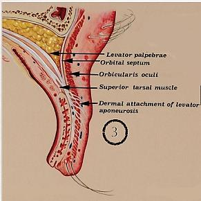

Part I · Muscles
Levator palpebrae superioris muscle
- Action: elevates the upper eyelids.
- Course: arises at the apex of the orbit, runs forward over the superior rectus, then becomes the fibrous aponeurosis.
- Origin: lesser wing of the sphenoid bone.
- Insertion:
- Main insertion on the anterior surface of the tarsus.
- Skin 2 mm below the superior palpebral furrow (eyelid crease).
- Lateral and medial horns into the orbital margin, to the medial and lateral palpebral ligaments and nearby bone.
- The upper fornix.
N.B. The levator is supplied by the oculomotor nerve (3rd nerve); its paralysis leads to ptosis.
